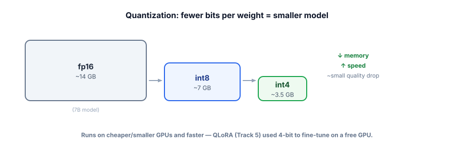

Quantization
Quantization shrinks a model by storing its weights with fewer bits — making it smaller, faster, and runnable on cheaper hardware, with usually only a small quality cost. It’s why you can run capable models on a laptop (the free local stack of this whole course), and a key lever when you self-host.
Smaller numbers, smaller model
A model’s weights are numbers, normally stored at 16 bits each (fp16). Quantization stores them with fewer bits — 8 (int8) or even 4 (int4) — so the model takes proportionally less memory and runs faster, because there’s less data to move and compute. The trade-off is a small loss of precision in each weight, which usually causes only a minor quality drop. You already saw this in Track 5: QLoRA quantizes the base model to 4-bit so a big model fits on a free GPU.

Quantization reduces the number of bits used to store each model weight (e.g., 16-bit → 8-bit → 4-bit). Lower precision means less memory and faster compute, at the cost of some accuracy. The trade-off is usually favorable: 8-bit is often nearly lossless, and 4-bit is a popular sweet spot for running large models on modest hardware. Local runtimes like Ollama serve quantized models (often in the GGUF format) by default — which is how this course runs models for free.
You’ve been using quantization all along — Ollama ships quantized models so they run on everyday hardware.
# Ollama serves quantized models by default — this is why it fits on a laptop:
$ ollama pull llama3.1:8b # downloads a ~4-bit quantized build (~4-5 GB, not ~16 GB)
$ ollama run llama3.1:8b # runs fast on CPU/modest GPU thanks to quantization
# You can choose a quant level when available (higher q = more bits = better quality, more memory):
$ ollama pull llama3.1:8b-instruct-q4_K_M # 4-bit (small, fast)
$ ollama pull llama3.1:8b-instruct-q8_0 # 8-bit (bigger, closer to full quality)The lesson: quantization isn’t exotic — it’s the default that makes free local models practical. When self-hosting, choosing a quant level is one of your main cost/quality dials.
Trade precision for memory
Step down the precision and watch the model shrink. Somewhere on this slider is the point where a 7B model fits on hardware you already own.
- Quantization stores weights with fewer bits (16 → 8 → 4), shrinking the model proportionally.
- Result: less memory, faster, cheaper hardware — with a usually-small quality drop.
- 8-bit is often near-lossless; 4-bit is the popular sweet spot for big models on modest hardware.
- It’s the default that makes free local models (Ollama/GGUF) practical, and underpins QLoRA (Track 5).
- When self-hosting, the quant level is a key cost/quality dial — measure the quality impact for your task.
You want to run a capable open model on a single modest GPU that can’t hold the full-precision version. What’s the standard move?
1. Roughly how much memory does a 13B-parameter model need at fp16 vs int4, and why?
2. When would you not want to go down to 4-bit?
3. Connect quantization to QLoRA from Track 5 — what role did it play there?
▸ Show solutions & reasoning
1. At fp16 (2 bytes/weight), 13B params ≈ 26 GB just for weights; at int4 (~0.5 byte/weight) ≈ 6–7 GB. (Real usage adds some overhead for activations/KV cache.) The footprint scales with bits-per-weight, so dropping from 16 to 4 bits is roughly a 4× reduction — the difference between needing a big GPU and fitting on a modest one.
2. When the quality drop matters for your task — e.g., high-stakes accuracy, complex reasoning, or a smaller model where 4-bit degradation is more noticeable. Aggressive quantization (4-bit and below) compounds with a model that’s already near its limits. The discipline: measure your task’s quality at each quant level (Track 6) and pick the lowest bits that still clear your bar — sometimes that’s 8-bit, sometimes 4-bit is fine.
3. QLoRA = Quantized + LoRA: it loads the frozen base model in 4-bit (quantization) to slash memory, then trains a small LoRA adapter on top. The quantization is precisely what let you fine-tune a large model on a single free GPU — same technique as here (shrink the model to fit cheap hardware), applied to training rather than serving.
Quantization matters most when you control the serving — i.e., you self-host an open model rather than calling a hosted API. (With a pay-per-token API, the provider handles the hardware; your levers are routing, caching, and token budgeting, not quant levels.) Self-hosting becomes attractive at scale (no per-token fees, just your hardware), for privacy (data never leaves — Track 7), or for customization (your own fine-tunes). In that world, quantization is a primary dial: it determines what hardware you need and how many requests one GPU can serve, directly shaping your cost per request.
The engineering nuance is that quantization quality isn’t uniform — it depends on the method (modern schemes like GPTQ, AWQ, and the GGUF k-quants preserve quality better than naive rounding), the model (bigger models tolerate quantization better; small ones degrade more), and the task (simple tasks barely notice 4-bit; subtle reasoning may). So you don’t pick a quant level by reputation — you serve a couple of candidates and run your eval set (Track 6) to see the real quality-vs-memory trade-off for your workload, then choose the smallest that clears your bar. Combined with the rest of this track, the pattern for self-hosters is: quantize to fit cheap hardware, batch to keep it busy (next lesson), cache and route to avoid work, and budget tokens to keep every call lean. That stack is how teams run capable models affordably — and it’s the same stack that lets you run them for free on a laptop.
Quantization makes one model instance cheaper. The next technique squeezes maximum work out of that instance by serving many requests at once. Next: batching & throughput.